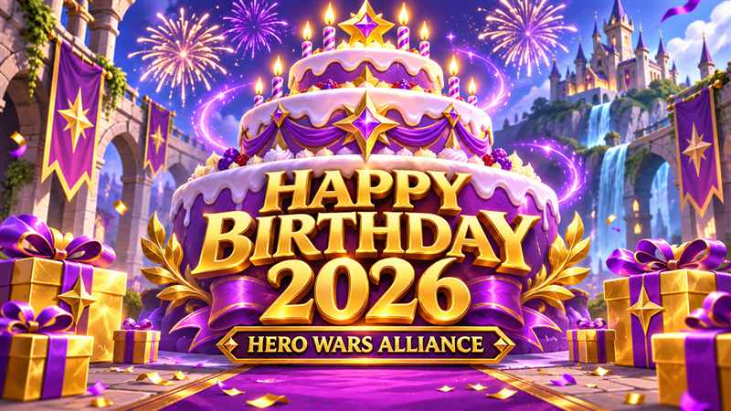
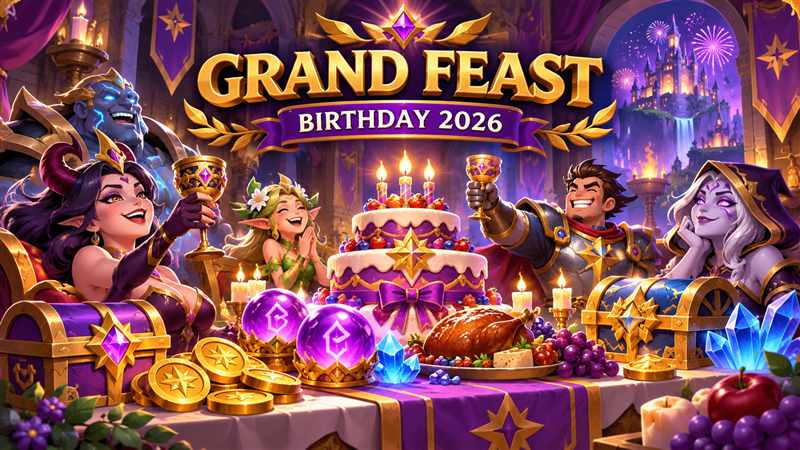

Hero Wars Alliance celebrates its 10th anniversary in 2026 with Dominion Day and Grand Feast. Both events reward progress with Holiday Particles, which help your Guild grow a giant birthday cake, while many quest milestones also award Seer's Orbs. This guide explains the planned missions, the resource targets, and how to approach the celebration without exhausting your reserves.
Planned event dates: November 8–15, 2026. The scheduled window opens November 8 at 02:00 UTC and closes November 16 at 02:00 UTC. In Brasília time, that is November 7 at 23:00 through November 15 at 23:00. Follow the countdown in your game for the final deadline.
Missions checked November 8: the current Dominion Day data adds Tower Chests, VIP, and Heroic Chest tasks and does not list Tactical Losses. Quests and rewards may change; check your active mission tab before spending resources.

How Holiday Particles and the Guild cake work
Complete birthday quests to collect Holiday Particles and contribute to your Guild's cake. Growing a bigger cake unlocks more rewards, so regular participation across the Guild matters. Coordinate with your guildmates and check the cake screen each day to see progress and available rewards.
Keep the two rewards separate: Holiday Particles support cake progress; Seer's Orbs are a different reward. Do not assume that earning one automatically spends the other. Read each event screen before using either resource.
The preview does not provide a complete cake reward ladder or an automatic conversion rule for leftovers. Claim rewards while the event is active and check the game for any separate shop or claim deadline.
Dominion Day: Realm missions and chest tasks
Verified November 8: the current quest data lists four Realm chains plus Tower Chests, Outland, VIP, and Heroic Chest. Tactical Losses is not listed in this version. The training requirement varies between minimum troop levels 4, 6, 8, and 9; use the version shown in your game.
One pass through each of the four Realm ladders gives 400 Seer's Orbs and 5,680 Holiday Particles. The source marks these ladders as repeatable and not daily-reset. These amounts describe one pass; confirm the restart behavior in-game before budgeting another cycle.
| Mission | What counts | Cumulative targets |
|---|---|---|
| Accelerations | Use Realm speed-ups (minutes) | 240, 480, 720, 1,440, 2,160, 4,680, 6,540, 10,380, 15,060, 20,160 |
| Honor Marks | Spend Honor Marks | 250, 500, 750, 1,000, 1,500, 2,000, 3,600, 5,200, 7,000, 9,000 |
| Destroy Troops | Defeat other players' troops in Realm | 8,750, 17,500, 22,000, 26,000, 35,000, 44,000, 75,000, 100,000, 175,000, 300,000 |
| Minimum troop level | Cumulative troops trained |
|---|---|
| 9 | 6,500, 12,500, 15,000, 19,000, 25,000, 31,000, 45,000, 57,000, 84,000, 135,000 |
| 6 | 6,000, 13,000, 16,000, 19,250, 25,500, 33,500, 46,000, 57,000, 86,000, 126,000 |
| 8 | 5,350, 11,300, 14,000, 16,800, 22,250, 29,000, 48,250, 51,000, 78,750, 126,000 |
| 4 | 6,000, 13,000, 16,000, 19,250, 25,500, 33,500, 46,000, 57,000, 86,000, 126,000 |
The troop versions are alternatives. Do not add their requirements or rewards together. Plan PvP around useful Guild activity; the current birthday data does not award a separate ladder for losing troops.
| Mission | Cumulative targets | Holiday Particles per full ladder | Event pass points per full ladder |
|---|---|---|---|
| Tower Chests | 10, 20, 35, 50, 80, 100, 125, 150, 175, 200, 220 | 285 | 545 |
| Outland | 50, 100, 200, 300, 400, 500, 600, 700, 800, 900, 1,000 | 1,050 | 345 |
| VIP | 200, 600, 1,200, 2,000, 5,000, 10,000, 15,000, 20,000, 30,000, 40,000, 45,000 | 1,590 | 345 |
| Heroic Chest | 1, 3, 5, 7, 10, 15, 30, 45, 60, 80, 100 | 1,590 | 545 |
These four ladders are not marked repeatable or daily-reset. Together with one pass through the Realm ladders, the listed Dominion Day rewards total 10,195 Holiday Particles, 400 Seer's Orbs, and 1,780 event pass points. These are completion totals, not free login gifts. VIP tracks points received; it is not a direct Emerald-spending task.

Grand Feast: resource spending missions
Grand Feast rewards upgrades and resource use across heroes and titans. All eight chains have fifteen milestones, and each full chain awards 180 Seer's Orbs and 1,450 Holiday Particles. Completing all eight would total 1,440 Orbs and 11,600 Particles, but the final targets are expensive. Choose milestones that fit upgrades you already need.
| Mission | Spend | First milestone | Final milestone |
|---|---|---|---|
| Artifacts Empowering | Artifact Coins | 4,000 | 350,000 |
| Relic fragments | Relic Shards | 20 | 900 |
| Hidden Reserves | Rune Spheres | 500 | 15,000 |
| Price of Power | Hero Skin Stones | 2,000 | 225,000 |
| Power Balance | Titan Skin Stones | 2,000 | 275,000 |
| Energy of evolution | Energy | 500 | 150,000 |
| Power Core | Chaos Cores | 5 | 485 |
| Wise Exchange | Emeralds | 1,000 | 450,000 |
Targets are cumulative within each chain. For example, spending 8,000 Artifact Coins reaches the 4,000 and 8,000 milestones; it does not require 12,000 coins. Price of Power uses hero Skin Stones, while Power Balance tracks Titan Skin Stones separately. Power Core requires Chaos Cores.
All Grand Feast milestones and rewards
Each row shows a cumulative spending target and the reward for that individual milestone. The reward amounts are the same across all eight chains.
| Step | Artifact Coins | Relic Shards | Rune Spheres | Hero Skin Stones | Titan Skin Stones | Energy | Chaos Cores | Emeralds | Orbs | Particles |
|---|---|---|---|---|---|---|---|---|---|---|
| 1 | 4,000 | 20 | 500 | 2,000 | 2,000 | 500 | 5 | 1,000 | 5 | 10 |
| 2 | 8,000 | 30 | 1,000 | 4,000 | 4,000 | 1,000 | 10 | 3,000 | 5 | 20 |
| 3 | 12,000 | 40 | 1,500 | 6,000 | 6,000 | 2,500 | 15 | 5,000 | 5 | 30 |
| 4 | 16,000 | 50 | 2,000 | 8,000 | 8,000 | 5,000 | 20 | 7,500 | 5 | 40 |
| 5 | 20,000 | 75 | 2,500 | 10,000 | 10,000 | 7,500 | 25 | 10,000 | 10 | 50 |
| 6 | 24,000 | 100 | 3,000 | 12,500 | 12,500 | 10,000 | 30 | 15,000 | 10 | 60 |
| 7 | 28,000 | 150 | 3,500 | 15,000 | 15,000 | 15,000 | 35 | 22,500 | 10 | 70 |
| 8 | 32,000 | 200 | 4,000 | 20,000 | 20,000 | 20,000 | 42 | 35,000 | 10 | 80 |
| 9 | 36,000 | 250 | 4,500 | 25,000 | 30,000 | 25,000 | 50 | 50,000 | 10 | 90 |
| 10 | 40,000 | 300 | 5,000 | 30,000 | 40,000 | 30,000 | 55 | 75,000 | 10 | 100 |
| 11 | 45,000 | 350 | 5,500 | 40,000 | 50,000 | 35,000 | 70 | 100,000 | 20 | 125 |
| 12 | 60,000 | 480 | 7,250 | 60,000 | 90,000 | 48,000 | 115 | 180,000 | 20 | 150 |
| 13 | 80,000 | 600 | 9,250 | 97,500 | 130,000 | 65,000 | 140 | 260,000 | 20 | 175 |
| 14 | 200,000 | 700 | 11,250 | 150,000 | 200,000 | 100,000 | 215 | 350,000 | 20 | 200 |
| 15 | 350,000 | 900 | 15,000 | 225,000 | 275,000 | 150,000 | 485 | 450,000 | 20 | 250 |
The listed Grand Feast chains do not reset daily, and the source marks them as repeatable. The totals above describe one pass through each ladder. Confirm the in-game restart behavior before budgeting another cycle; plan your spending across the full event window and collect each unlocked milestone. The largest targets, such as 450,000 Emeralds or 150,000 Energy, are completion ceilings rather than recommended budgets.
Birthday shop: what to prioritize
The announced birthday shop lineup includes Mojo's Crimson Grove Skin and Skin+, Soul Stones and Artifact Fragments for Eva, Crow, and Mojo, plus Skin Stones and other items. Prices and the full stock list are not available in this preview, so compare the actual costs when the shop opens.
- Choose a team upgrade first. If Eva, Crow, or Mojo is part of a team you actively use, compare their progression items with your current bottleneck.
- Evaluate Mojo's skin options carefully. Check the stat bonus, unlock requirements, and price of the Skin and Skin+ before committing to either.
- Use flexible resources to finish useful upgrades. Skin Stones can be valuable when they complete an important level on a hero you already play.
- Avoid spreading the budget too thin. Pick one meaningful upgrade, then use the remaining currency for smaller needs.
Holiday Particles are described as cake progress resources. Check the shop's displayed currency rather than assuming that Particles or Seer's Orbs buy every item.
Best days to spend: Birthday 2026 + Guild Versus
Use the same action to advance birthday quests and Guild Versus daily tasks. The dates below match the November 8–15 birthday window against the weekday schedule in the Guild Versus mission data. They are planning recommendations: confirm that Guild Versus and the relevant daily task are active in your game.
Follow the Guild Versus reset, not your local midnight. Dates label the scheduled weekdays; check the in-game countdown for your local boundaries. Sunday, November 8 and 15, has no Guild Versus scoring in this schedule. Birthday progress can still count while its own event is active.
| Resource / birthday mission | Best scheduled day | Guild Versus scoring | How to combine the missions |
|---|---|---|---|
| Titan Skin Stones — Power Balance | Monday, Nov 9 | 100 points per 15 stones, plus 100 per 3 Titan Power gained. | Use stones on Titans you already plan to upgrade. Only actual Titan Power gained adds power points. |
| Hero Skin Stones — Price of Power | Tuesday, Nov 10 | 700 points per 15 stones. | Strongest direct spending match. Thursday is an alternative only through actual Hero Power gained (30 points per power). |
| Energy — Energy of evolution | Wednesday, Nov 11 | 100 points per 3 Energy spent. | Save optional Energy bottles for Wednesday; continue normal daily Energy use throughout the event. |
| Honor Marks — Honor Marks | Wednesday, Nov 11 | 2,000 points per Honor Mark spent. | Spend during the Tech Power task, while the birthday Honor Marks ladder is active. |
| Chaos Cores — Power Core | Thursday, Nov 12 | 3,000 points per Core, plus 30 per Hero Power actually gained. | Combine with useful hero artifact evolution. |
| Artifact Coins — Artifacts Empowering | Thursday, Nov 12 | 30 points per Hero Power actually gained; no direct Artifact Coin task. | Buy fragments and apply useful upgrades while Hero Power scoring is active. Spending coins alone does not guarantee Guild Versus points. |
| Relic Shards — Relic fragments | Monday, Nov 9 or Thursday, Nov 12 | 150,000 points per 10 shards on either day. | Both days have the same direct rate. Favor Thursday if the upgrade also increases Hero Power; split reserves if useful for daily chests. |
| Troop training — Train Troops | Friday, Nov 13 | Per troop: Lv. 4 = 20; Lv. 6 = 41; Lv. 8 = 84; Lv. 9 = 120 points. Training speed-ups add 200 per minute. | Complete training at the minimum level shown in your birthday mission. Saturday scores training speed-ups too, but has no direct troop-training task. |
| Outland chests and Emeralds — Outland + Wise Exchange | Friday, Nov 13 | 2,000 points per Outland chest opened; no direct Emerald-spending task. | Best planned overlap: birthday chest rewards, Emerald-spending progress, Guild Versus chest points, and the Nov 13–15 discount if active. Buying Emeralds alone does not advance Wise Exchange. |
| Heroic Chests — Heroic Chest | Friday, Nov 13 | 4,000 points per Heroic Chest opened. | Save optional keys for Friday; use normal free openings before they expire. |
| Rune Spheres — Hidden Reserves | Saturday, Nov 14 | 50,000 points per 100 Rune Spheres. | Save optional Rune Sphere upgrades for Saturday. Rune Stones also score (100 points per 20), but do not count as Rune Spheres for Grand Feast. |
| Realm PvP — Destroy Troops | Saturday, Nov 14 | Enemy troops disabled: Lv. 4 = 6; Lv. 6 = 13; Lv. 8 = 26; Lv. 9 = 30 points each. | Use planned PvP and confirm both counters advance: Guild Versus says disable, while the birthday mission tracks killed troops. Losses can score Guild Versus, but no birthday Tactical Losses chain is currently listed. |
| Realm speed-ups — No Time to Wait | Nov 10 / 11 / 13 / 14, by activity | 200 points per minute: building Tue; research Wed; training Fri/Sat; healing Sat. | Choose the day for the speed-up type you actually need. Friday combines training speed-ups with troop recruitment. |
| Tower Chests / VIP points | Any active day, Monday–Saturday (Nov 9–14) | 4,000 points per Tower chest; 100 per VIP point received. | No preferred weekday at these rates. Keep free daily Tower openings; make purchases only within your existing budget. |
| Holiday Particles / Seer's Orbs | No matching Guild Versus task | No spending task for either reward in the supplied schedule. | Follow the cake and Seer's Game deadlines; this table schedules the resources used to earn birthday rewards. |
Daily chest planning: Guild Versus has nine chests each active day, up to 4,500,000 points. Coordinate spending with your Guild and the points still needed that day. For example, 20 Relic Shards yield 300,000 direct Guild Versus points on Monday or Thursday and reach the first Grand Feast shard milestone; 500 Rune Spheres yield 250,000 direct points on Saturday and reach the first Hidden Reserves milestone. Extra Hero/Titan Power points depend on the upgrades actually applied.
Sources checked November 8, 2026: HW Warden: Dominion Day missions, HW Warden: Grand Feast missions, and the linked Guild Versus JSON. Quest requirements and sale availability can change; verify the active screens before spending.
F2P strategy for Birthday 2026
- Before spending: open both event tabs, check your troop version, and write down the next affordable target in each chain.
- Use normal daily activity: spend regenerating Energy on needed farming and contribute the Particles you earn to Guild progress.
- Bundle planned upgrades: spend saved Artifact Coins, Skin Stones, Relic Shards, Rune Spheres, or Chaos Cores on useful improvements while Grand Feast is active.
- Stop at a deliberate milestone: compare the extra resource cost with the next reward. You do not need to finish a chain for the earlier rewards to be worthwhile.
- Coordinate Realm activity: plan recruitment, speed-ups, and PvP with your Guild, keeping enough troops and supplies for your regular objectives.
- Before the timer ends: collect quest and cake rewards, check the shop, and confirm any separate spending deadline.
November 13–15: Emerald offers and Outland discount
The planned Big Sale includes x4 Emerald offers and an Outland Chest discount on November 13–15. If you already intend to spend Emeralds on Outland, waiting for the active discount may help combine Dominion Day chest progress with Grand Feast Emerald spending. Confirm that both quests and the discount are active before opening paid chests.
An x4 purchase offer and an Outland discount are separate promotions. Compare the final in-game cost and the next milestone; neither promotion makes the highest spending target necessary.
Example: a modest Grand Feast plan
Spending 8,000 Artifact Coins reaches two milestones for 10 Orbs and 30 Particles. Spending 2,000 Energy reaches the 500 and 1,000 milestones, also for 10 Orbs and 30 Particles; the next Energy target is 2,500. Together, those actions give 20 Orbs and 60 Particles while advancing upgrades and farming you already planned.
Birthday event questions
Are Dominion Day and Grand Feast the same event?
They are separate quest sets within the birthday celebration. Dominion Day focuses on Realm tasks and Outland chests; Grand Feast focuses on spending upgrade resources. Both can supply Holiday Particles for the Guild cake.
Do I need to complete every milestone?
No. Each reached milestone has its own reward. For an F2P account, useful upgrades and affordable early targets are a practical starting point.
Should I add rewards from all troop versions?
No. The level 4, 6, 8, and 9 versions represent alternative mission requirements. Use the version displayed in your game.
Which deadline should I follow?
Use the in-game countdown. The announced dates are November 8–15, with the scheduled closing boundary at 02:00 UTC on November 16; your local calendar date may differ.